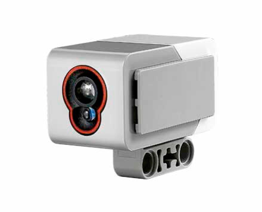

4 Robot sensors and data logging¶
In this notebook, you will start to learn how to work with one of the sensors provided in our robot simulator, as well as how to collect data from it for further analysis or visualisation.
In particular, we will focus on the light sensor, using it to demonstrate the various ways we can capture, report and make use of sensor information in RoboLab.
Before we get started, load in the simulator in the normal way:
from nbev3devsim.load_nbev3devwidget import roboSim, eds
%load_ext nbev3devsim
4.1 Previewing sensor values¶
The Instrumentation panel provides information regarding sensor and motor readings.
LeftMotor/RightMotorreport tachometer counts for each motorSensor1/Sensor2report left and right light sensor values as follows: reflected light percentage for the red component range 0…100; average reflected light percentage over all three RGB components range 0…100; 3-tuple of RGB values, each in range 0…255Ultrasonic: distance reading to obstacleGyro: the angle in degrees since the sensor was initialised and the rate at which the sensor is rotating, in degrees/second.
Run the following code cell with the --instrumentation / -i simulator magic flag to show the Instrumentation panel and the Rainbow_bands background preloaded. Click and drag the simulated robot, or use the Position controls (-X), to move the robot around the testcard, observing how the sensor values are updated as you do so:
%sim_magic -b Rainbow_bands -H --instrumentation
Record your own observations about the sensor readings over various coloured background stripes here.
4.2 Investigating the light sensor¶
One of the things that distinguishes robot control programs from many other sorts of program is that robots typically have a range of sensors available to them. Readings taken from these sensors can be referenced from within the robot control program and used to inform or determine the actions it takes.
To begin with, you will experiment with a simulated downward light sensor that can take readings from the simulator world background as it drives over it.
The simulated sensor we are using is based on the Lego light sensor:

The light sensor measures light across three channels: red, green and blue. The light sensor returns information about the reflected light in various ways.
Some of these are referenced in the robot control programs as follows:
.rgb: as a list of raw values,[red, green, blue], each value representing an integer in the range 0…255.reflected_light_intensity: an integer in the range 0…255 representing the red component of the full RGB response.reflected_light_intensity_pc: a floating-point number in the range 0…100.0 representing the reflected light intensity as a percentage.full_reflected_light_intensity: a floating-point number in the range 0…100.0 representing the reflected light intensity averaged over all three RGB channels, as a percentage.color/.color_name: a colour value in the range 1…7 (representing: black, blue, green, yellow, red, white, brown), or the corresponding colour name.
We can remind ourselves how the sensors are defined by previewing the boilerplate code added by the magics:
%sim_magic_preloaded -v
In this case, we have defined the left colour sensor as colorLeft so within a robot control program we might lookup a sensor value as colorLeft.reflected_light_intensity or colorLeft.reflected_light_intensity_pc for example.
4.2.1 Using the light sensor as a low-resolution camera¶
The way each light sensor is implemented by the simulator is as a simple quantised circular area of pixels, each of which returns an RGB value. The value returned by the sensor is then some function of the individual array values.
In fact, the function is a simple average (mean) value, but other strategies are available, including weighted averages, where we weight values returned by pixels in the central focal array of the array more heavily than ‘out of focus’ or ‘peripheral vision’ pixels at the edge of the array, for example.
You can preview the sensor array view using the Sensor arrays panel raised via the --array / -A magic switch.
%sim_magic -b Testcard -H --array
4.3 Updating variables from sensor values¶
Load the Grey_bands background in to the simulator, and download and run the following program.
Observe the values that are displayed in the simulator output window.
You may also choose to monitor the values via the Instrumentation and Sensor arrays panels.
%%sim_magic_preloaded -b Grey_bands --output -RH
# Explicitly set up the colour sensor
from ev3dev2.sensor import INPUT_2
colorLeft = ColorSensor(INPUT_2)
tank_drive.on(SpeedPercent(50),
SpeedPercent(50))
sensor_value = colorLeft.reflected_light_intensity_pc
while sensor_value > 0:
print(sensor_value)
sensor_value = colorLeft.reflected_light_intensity_pc
print("I now see {}".format( sensor_value))
tank_drive.off()
In the program the colorLeft.reflected_light_intensity_pc element represents a variable that describes the current value of a particularly configured robot sensor. We then set another variable, sensor_value equal to the value of that sensor variable.
From the simulator output display, we see that the sensor_value changes as the robot crosses the grey lines. But there is nothing explicitly stated in the program where we update the colorLeft.reflected_light_intensity_pc value. Rather, its value is updated ‘live’ from a regular poll of the sensor within the simulator.
By polling a sensor, we mean that a reading is taken from the sensor (somehow!) and used to set the value of a variable associated with that sensor so we can make decisions based on the sensor value from within our robot control program.
4.3.1 Activity – Experimenting with the light sensor¶
In this activity you will explore the range of values returned by the light sensor.
Load the Grey_bands background into the simulator and then click and drag the simulated robot over each coloured band.
%sim_magic -b Grey_bands
Alternatively use the simulator magic to move it to the various locations -y 500 and -x taking values in [125, 325, 725, 1125, 1525].
Record the sensor values displayed in each case. You can identify these values:
from the simulator widget user interface by opening the Instrumentation panel
from the simulator widget output window if you run a program to print the values there
from a notebook code cell by synchronising the robot state and then displaying the required data values.
What value does the sensor give when the robot is placed on the white background? What sensor values are returned when the light sensor is over each of the light grey, medium grey, dark grey and black bands?
%%sim_magic_preloaded -b Grey_bands -y 500 -x 875 -R
print('RGB', colorLeft.rgb)
print('Reflected light intensity',
colorLeft.reflected_light_intensity)
print('Reflected light intensity per cent',
colorLeft.reflected_light_intensity_pc)
print('Full reflected light intensity (%)',
colorLeft.full_reflected_light_intensity)
print('Colour', colorLeft.color)
print('Colour name', colorLeft.color_name)
Double-click this cell to edit it and add your recorded sensor values here:
white background:
light grey band:
medium grey band:
dark grey band:
black band:
Now load the Rainbow_bands background into the simulator and then click and drag the simulated robot over each coloured band (or move it to the various locations -y 500 and -x taking values in [125, 325, 725, 1125, 1525].
%sim_magic -b Rainbow_bands
What value does the sensor give when the robot is placed on each of the coloured backgrounds?
Do you notice anything strange about the sensor values, particularly when the robot is close to the edge of a particular band?
Double-click this cell to edit it and add your recorded sensor values here:
white background:
light grey band:
medium grey band:
dark grey band:
black band:
Example solution¶
Click the arrow in the sidebar or run this cell to reveal an example solution.
I get the following readings for the reflected light intensity readings from the light sensor:
white background:
100light grey band:
~86medium grey band:
~82dark grey band:
~50black band:
0
There is some ‘noise’ in the form of intermediate values as the robot goes into and leaves the band. This is because the sensor has a ‘width’ so it may be averaging readings where part of the sensor is over the white background and part of it is over the coloured band.
4.3.2 Identifying colour values¶
As we well displaying raw RGB values, we can also report on colour values.
Run the following magic to load in a program that speaks the colour value and colour name of the current colour seen by the left colour sensor:
%%sim_magic_preloaded -b Rainbow_bands
colorval = colorLeft.color
colorname = colorLeft.color_name
say(colorval)
say(colorname)
print("I see" + colorname + str(colorval))
Now run the following command to autorun the program at specified locations of that background:
# Run this cell several time with
# with a different value of x each time:
# x: 100, 300 500, 700, 900, 1100, 1300, 1500
%sim_magic --autorun --xpos 100
4.4 Logging data from the light sensor¶
In the simulator, the Grey_bands background displays a white background overlaid by four grey bars of different intensity, ranging from a pale grey to black.
The following program could be used to drive the simulated robot over the background, logging the light sensor data as it does so:
# import require components
from ev3dev2.motor import MoveTank, SpeedPercent, OUTPUT_B, OUTPUT_C
from ev3dev2.sensor import INPUT_1, INPUT_2, INPUT_3, INPUT_4
from ev3dev2.sensor.lego import ColorSensor
from time import sleep
# Create tank drive and colour sensor references
tank_drive = MoveTank(OUTPUT_B, OUTPUT_C)
colorLeft = ColorSensor(INPUT_2)
# Start the robot driving forwards
tank_drive.on(SpeedPercent(50), SpeedPercent(50))
# Blocking sample rate for sampling sensor value
sample_period = 0.1
# Run the following loop
while True:
# Log the colour sensor data
print('Colour: ' + str(colorLeft.reflected_light_intensity_pc ))
# If we see black, break out of the loop
if sensor_val == 0:
break
sleep(sample_period)
say("All done.")
We can also use the %%sim_magic_preloaded magic to preload the drive and sensor configurations and references to minimise the clutter in our code, whilst remembering that it is still required for the program to run, and will be loaded in automatically by the magic.
%%sim_magic_preloaded --background Grey_bands -OHR
from time import sleep
# Start the robot driving forwards
# using the preloaded tank_drive definition
tank_drive.on(SpeedPercent(50),
SpeedPercent(50))
# Blocking sample rate for sampling sensor value
sample_period = 0.1
while True:
sensor_val = colorLeft.reflected_light_intensity_pc
print('Colour: ' + str( sensor_val))
# If we see black, break out of the loop
if sensor_val == 0:
break
sleep(sample_period)
say("All done.")
Run the previous code cell to download the program to the simulator and then run it in the simulator.
As the program runs, you should notice that a sequence of logged data values from the sensor are displayed in the output window. If you scroll up through the display in that window you should notice that the sensor values changed as the robot crossed over each grey line.
4.5 Viewing the logged data using a chart display¶
As well as taking the sensor readings directly, we can also read them from a chart created in real time from the logged data.
By monitoring the output display for print messages that log sensor outputs using a particular message format, particular messages can be automatically parsed and used to extract data values so that they can be displayed on a dynamically updated line chart.
4.5.1 Activity – Viewing sensor data in a line chart¶
Enable the inline interactive simulator data charter by clicking the Chart toggle display button in the simulator, then ensure that the Colour trace checkbox is ticked.
Reset the start location of the robot by dragging it back to the start position or using the Position controls sliders.
Using the Simulator controls, click the Run button or use the simulator keyboard shortcut (R) to run the simulator data collection program again.
Note that the simulator might run quite slowly as it updates the chart.
Observe how the chart is updated with the live sensor values. Can you see where the robot encounters the different coloured bands? What values are recorded for each band?
If the chart does not update, check that the Colour checkbox is selected. If it is and there is still no chart display, close the Chart panel and then open it again, press the Clear Chart button, wait a moment or two for the chart to reload and then try to run the program again.
From the chart, can you read off the values for each band?
Double-click this cell to edit it and add your recorded sensor values here:
white background:
light grey band:
medium grey band:
dark grey band:
black band:
Example solution¶
Click the arrow in the sidebar or run this cell to reveal an example solution.
The following diagram shows the result of showing the real-time data logging chart:
![The simulator Data log window, with a graph showing sensor data. The graph has a vertical axis with a scale that runs from 0 to 250, and a horizontal axis that runs from 0 to 400. A line chart is plotted showing successive sensor readings. Reading the graph from left (the first sensor reading) to right (the last sensor reading), the line is horizontal at a y-value of 255 until an x-value of about 100, followed by a drop to about 220 until about x=145, at which point it climbs steeply back up to y=255, remaining at that level until about x=190. There is a further sharp drop to about (x, y) equal to (190, 210), then back up to 255 at about x=225, until another edge at about x=280 down to (280, 130); the chart then goes back up from about (320, 130) to (321, 255), then down to y=0 at about x=360, staying then until x is almost 410, at which point the line climbs back up to 255, stays there for a short while, and the trace ends.](../_images/Section_00_03_-_charting.png)
As the robot progresses across the bands, the bars that it encounters get progressively darker, so the sensor readings reduce. Between the bands, as the robot crosses the white background, the sensor reading go back up to their initial, maximum reading.
If you hover your cursor over the chart, all the recorded trace values at that x-position on the chart are displayed. These are the values that were recorded and displayed, taken from the midpoint of the chart, when I ran the experiment:
white background:
100light grey band:
86.27451medium grey band:
82.7451dark grey band:
50.19608black band:
0
(You may have noticed that the simulation runs in a slightly more ‘stuttery’ way than when the chart is not displayed as your computer has to do more work in terms of dynamically updating the chart. Increasing the sample_period time should improve this but at the cost of collecting less data.
4.6 Viewing the logged data – Uploading the logged data to the notebook¶
As well as inspecting the datalog values in the simulator output window and via the embedded datalog chart, we can also export the logged data from the simulator into the Python environment used by the notebook. This then allows us to analyse and chart the data within a complete Python environment.
The following code cell shows how to access the datalog from the simulator in the notebook’s Python environment. The pandas package is a very powerful package for working with tabular data.
You can learn more about using pandas from the OpenLearn unit Learn To code for data analysis or as part of the Open University module Data management and analysis (TM351).
4.6.1 Clearing the simulated robot’s datalog¶
In order to view the data, let’s first clear the data using the %sim_data line magic with the --clear / -c switch:
%sim_data --clear
Now rerun the data collection program that collected the data from a traverse across the grey lines:
%sim_magic -x 100 --autorun -W
4.6.2 Retrieving data from the simulated robot’s datalog¶
Once you can see (or hear!) that the program has finished, run the following code cell to use the %sim_data line magic to grab the data from the datalog into the notebook’s own Python environment as a pandas dataframe and then associate it with the data_df variable running in the notebook’s own Python environment:
data_df = %sim_data
The dataframe is a powerful data structure that allows us to represent and work with tabular datasets. In certain repsoects, you might think of it providing a code-powered equivalent to a spreadsheet application such as Microsoft Excel.
We can preview the first few lines of the dataframe by running the following command:
data_df.head()
It is common parlance in computing circles to refer to the top, or first few lines, of a file as the head and the end, or last few lines, of a file as the tail.
4.6.3 Visualising data retrieved from the simulated robot datalog using a seaborn line chart¶
With the data in a pandas dataframe, we can then use a variety of tools to generate our own charts from it.
One approach is to use the seaborn Python package to create a line chart directly from the dataframe.
The seaborn package is one of many Python packages that supports the creation of a wide range of statistical and scientific chart types from pandas dataframes. See seaborn data visualization library for more details.
By convention, when we import the seaborn package we create an alias name for it: sns.
In the following unmagicked, notebook Python code cell, the seaborn line plot charting function is selected (sns.lineplot()) and passed our datalog dataframe (data=data_df). The index column values in the dataframe are assigned to the x-axis (x = "index") and the value column values to the y-axis (y = "value"). The line colour is generated from unique values identified in the variable column (hue = "variable").
Note that in passing parameter values to the lineplot() function, we can use either single or double quotes to identify the column name as a string value. So for example, both hue='variable', using single quotes (') and hue="variable", using double quotes ("), are equally valid.
If we had additional sensors identified using different variable values, such as ultrasonic, each sensor would have its own coloured line trace.
# Load in the seaborn charting package
import seaborn as sns
# Generate a line chart from the datalog dataframe
ax = sns.lineplot(x = "index",
y = "value",
# The hue category defines line color
hue = 'variable',
data = data_df)
If you have run the robot data collection program several times, the datalog will contain data from each of the runs. To ensure the datalog only contains data from a particular run, run the command %sim_data --clear in a notebook code cell before running the program in the simulator. Then run the program in the simulator to collect the data, and then grab the data into a dataframe.
# Running this code cell will clear the robot's datalog
%sim_data --clear
4.6.4 Generating additional chart types from the same dataset¶
As well generating charts using just the seaborn package, we can build up charts from several layers of data display. The following chart is constructed from a seaborn FacetGrid chart, which generates one line chart per sensor (as identifed from the row = "variable" parameter), and then overplots individual x markers, one per datapoint, using a matplotlib plotting function.
matplotlib is a relatively low-level charting library that gives us more control over simple items that make up a chart. The seaborn package is itself built up from simpler matplotlib components and provides higher-level charting functions that allow us to create different chart types in a natural way from pandas dataframes.
import matplotlib.pyplot as plt
# A FacetGrid is a faceted display arranged in a grid
g = sns.FacetGrid(data_df,
row="variable",
height=5,
# Set the aspect ratio of the grid
aspect=2,
# Declare whether we want common y-axes
sharey=False)
g = g.map(plt.plot, "index", "value",
marker="x",
markersize=10, #optionally set marker size
markeredgecolor='red' #optionally fix marker color
);
Starting from the left-hand side, each x point represents a sensor reading. The white background in the grey bars environment shows as 100 and the solid black line shows as 0.
4.7 Summary¶
In this notebook, you have seen how to preview sensor values using the Instrumentation panel, as well as using variables to refer to sensor values and use them to identify when to break out of an otherwise infinite while loop.
You have reviewed the capabilities of the light sensor, including its ability to report reflected, three-component RGB (red, green, blue) colour values and even colour names.
You have also seen how we can view sensor data in real time as it is collected using the simulator Chart view, or download the logged data to the notebook’s own Python environment. With the data downloaded to the notebook, we can visualise it at our leisure in an ‘offline’ way using powerful Python statistical and scientific charting packages such as seaborn.
This completes the practical activities for this week.